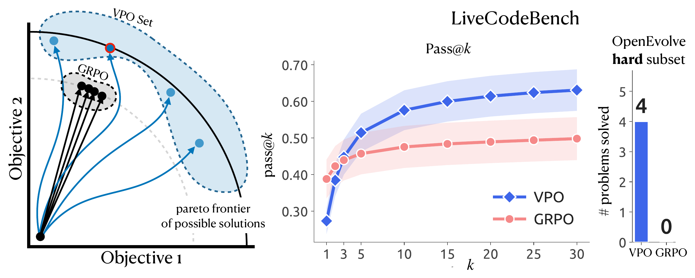
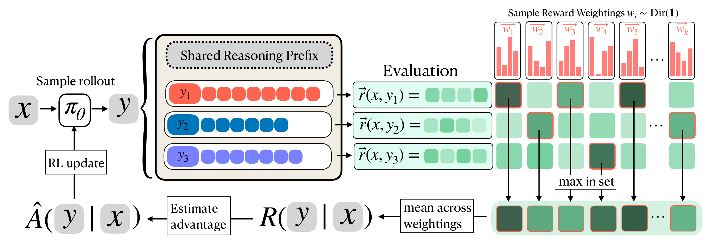
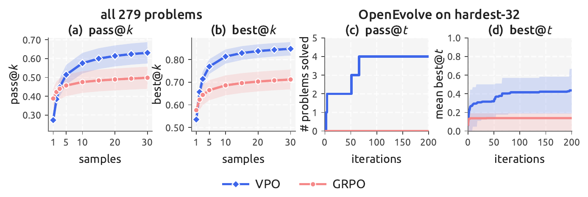
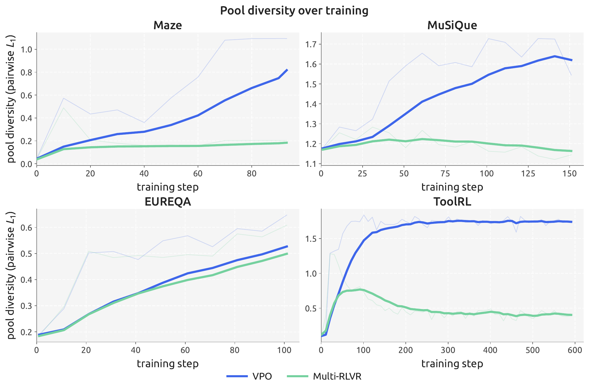

Training for Diversity Improves Test-Time Search
1Improbable AI Lab 2MIT 3MIT-IBM Computing Research Lab 4Sakana AI
Modern LLM pipelines rarely take a single answer. They sample many candidates and keep the best: best-of-n, verifier reranking, evolutionary search like AlphaEvolve. This is test-time search, and it only pays off if the candidates differ. GRPO works against that. It collapses the model onto one high-probability answer, so the extra samples are near-duplicates and search has nothing to choose between.
Vector Policy Optimization (VPO) keeps the reward a vector. Most rewards already are vectors: several objectives summed into one score. VPO trains the model to emit a set of solutions that spread across different trade-offs, so search gets distinct candidates. It is a drop-in replacement for the GRPO advantage estimator. It improves pass@k / best@k, and the gap grows as the search budget grows.

Modern LLM pipelines pair a learned policy with explicit test-time searchAny procedure that draws several candidate solutions from the model and then selects among them: best-of-\(n\), self-consistency, verifier reranking, or evolutionary loops like AlphaEvolve and FunSearch.: rejection sampling with a verifier, best-of-n, evolutionary methods like AlphaEvolve, or agents that plan and backtrack. In all of them, search picks from a pool of candidates the policy generates, so the diversity of that pool sets a ceiling on how well search can do.
Standard RL post-training works against that. Policy-gradient methods like GRPO drive the model toward a narrow set of high-probability responses, so after training the extra samples are near-duplicatesThis is the well-documented entropy / mode collapse of RL post-training: KL-regularised policy gradients sharpen the output distribution, so pass@\(k\) at large \(k\) often degrades relative to the base model even as pass@1 improves.. That collapse is exactly what makes downstream search ineffective. VPO reframes the job of post-training: the goal is not to converge on the single best response, but to maximize the diversity of a set of competent solutions, leaving exploitation entirely to search. A clean division of labor: training explores, search exploits.
In most real tasks the reward is already a vector \(r(x,y)=[r_1,\dots,r_d]\) of sub-scores that we choose to sum up: per-test-case correctness in code, per-criterion ratings in RLHF, per-sub-question success in multi-hop reasoning, or the format / tool-name / argument fields in tool use. Scalar RL throws this structure away by fixing a single weighting \(w^\star\) and optimizing \(w^{\star\top} r\). Every answer is judged on one axis, so the policy has no reason to keep an answer that is excellent on \(r_2\) but mediocre on \(r_1\), exactly the answers search needs.
VPO keeps the reward a vector. Any weighting \(w\in\Delta^{d-1}\) on the simplexThe \((d{-}1)\)-simplex \(\Delta^{d-1}\) is the set of non-negative weight vectors that sum to 1, i.e. every convex combination of the objectives. Each point is one "user preference" over the reward components. defines a valid scalar goal \(w^\top r\); VPO refuses to commit to one and instead asks the model for a set of \(m\) answers, rewarding the set for doing well under many weightings at once.
For a sampled weighting \(w\), VPO scores not the average answer but the best one, \(\max_{y\in S} w^\top r(x,y)\)The \(\max\) is what makes this a coverage objective rather than an averaging one. Averaging the set would just reward each answer to be individually good under the mean weighting, recovering scalar RL. Taking the max instead rewards the set for containing a specialist for each \(w\): it is exactly the expected best-of-\(m\) the downstream search will enjoy., and averages that best-of-set over a distribution of weightings:
$$R(S) \;=\; \mathbb{E}_{w\sim\mathrm{Dir}(\alpha)}\Big[\max_{y\in S} w^\top r(x,y)\Big].$$The \(\max\) inside the expectation is the whole trick. A set gets credit only for its best member under each weighting, so the way to score highly is to have a different member be best for different weightings. Near-duplicates cover a narrow slice of the simplex; a set that spreads across trade-offs covers all of it. The objective rewards coverage of the reward space, which is precisely the diversity downstream search exploits.
Drop that set-level reward into GRPO and you have VPO. In practice \(R(S)\) is a Monte-Carlo estimate: draw \(K\) weights once and share them across the GRPO group of \(G\) rollouts, so every set is scored under the same weightings and the advantages stay comparable:
$$\hat{R}\big(S^{(g)}\big) \;=\; \frac{1}{K}\sum_{k=1}^{K}\,\max_{s\in S^{(g)}} w^{(k)\top} r(x,s), \qquad w^{(1)},\dots,w^{(K)}\stackrel{\text{iid}}{\sim}\mathrm{Dir}(\mathbf{1}).$$
The model emits all \(m\) answers in one autoregressive rollout (a shared reasoning prefix, then the
answers), so it can condition each answer on the previous ones and deliberately diversify. The
scalar \(\hat R\) replaces the usual per-rollout reward; the GRPO advantage is computed and applied
to every token as normal. Two knobs: the weight sampler (i.i.d. Dirichlet, or a Sobol quasi-Monte-Carlo
sampler with lower varianceSharing the \(K\) weight draws across the whole group already removes the between-rollout noise. The Sobol (low-discrepancy) sampler additionally spreads the \(K\) weights more evenly over the simplex than i.i.d. draws, cutting the variance of \(\hat R\) for the same \(K\).) and the concentration \(\alpha\) (\(\alpha=\mathbf{1}\) is uniform). In
code it is a 3-file patch to veRL:
algorithm.adv_estimator=grpo becomes vpo.

Across four domains, VPO matches or beats the strongest scalar RL baselines on test-time search (best@kbest@\(k\) = the highest eval-scalar score among \(k\) sampled candidates; pass@\(k\) = the fraction of problems where at least one of \(k\) candidates is correct. Both reward a diverse pool: they only improve if the extra samples differ.), and the gap widens with the search budget. VPO can lose at k=1 but wins once you sample more than once, the regime where search sits downstream.
| Domain (model) | GRPO | Max-at-K | Multi-RLVR | VPO | diversity (GRPO → VPO) |
|---|---|---|---|---|---|
| Maze (Qwen3-4B, k=4) | 0.432 | 0.577 | 0.436 | 0.593 | 0.003 → 1.01 |
| MuSiQue (Qwen3-1.7B, k=5) | 0.728 | 0.802 | 0.633 | 0.832 | 0.054 → 0.59 |
| EUREQA (Qwen3-8B, k=5) | 0.236 | 0.237 | 0.267 | 0.279 | 0.119 → 0.51 |
| ToolRL (Qwen3-1.7B, k=4) | 0.925 | 0.954 | 0.905 | 0.952 | 0.044 → 1.30 |
On ToolRL everything saturates near the reward ceiling, so VPO ties Max-at-K (0.952 vs 0.954) while producing about 10× the candidate diversity. Where the Pareto front is genuinely wide (Maze, MuSiQue, EUREQA), VPO is the top performer.


Temperature sampling adds undirected token-level noise and degrades quality; VPO produces directed diversity in reward space. Multi-objective RL conditions a policy on a weight vector to trace the Pareto front, one policy per preference; VPO never conditions on a weight, and its goal is performance under a fixed \(w^\star\) using a single unconditional policy. GDPO is single-solution against a vector reward; VPO is multi-solution. Multi-RLVR samples multiple answers but collapses the vector to a scalar before scoring, so its pool still drifts toward duplicates. VPO is for the regime where the reward genuinely decomposes and search is downstream; when the reward components are near-collinear it reduces to ordinary scalar RLConcretely, on UltraFeedback scored by a near-collinear ArmoRM reward the simplex effectively collapses to a line, and VPO lands slightly below scalar baselines on absolute best@\(k\), while still retaining the largest per-\(k\) headroom of any method..
git clone https://github.com/ryanboldi/vpo.git && cd vpo
uv venv .venv && source .venv/bin/activate
cd verl && pip install -e . && cd .. && pip install -e .
python data/preprocess_maze.py --local_save_dir $HOME/data/maze
bash train.sh METHOD=vpo TASK=maze MODEL=Qwen/Qwen3-4BCode released under Apache 2.0. github.com/ryanboldi/vpo
The authors express gratitude to Jyo Pari, Jonas Hübotter, Nitish Dashora, Andre Ye, Itamar Pres, Navodita Sharma, John Marangola, Nolan Fey, Oliver Sieberling, Linlu Qiu, Luca Grillotti, Benjamin Eysenbach, Yoon Kim, Jacob Andreas, and members of the Improbable AI lab at MIT for discussions that helped shape this work. This work was supported by National Science Foundation graduate research fellowships to RB, IP, and AK, the MIT-IBM Computing Research Lab, the MIT-Google Program for Computing Innovation and Hyundai Motor Company. This research was sponsored by the Army Research Office and was accomplished under Grant Numbers W911NF2110328 and W911NF-23-1-0277. The views and conclusions contained in this document are those of the authors and should not be interpreted as representing the official policies, either expressed or implied, of the Army Research Office or the U.S. Government. The U.S. Government is authorized to reproduce and distribute reprints for Government purposes notwithstanding any copyright notation herein.
@misc{bahlousboldi2026vpo,
title={Vector Policy Optimization: Training for Diversity Improves Test-Time Search},
author={Ryan Bahlous-Boldi and Isha Puri and Idan Shenfeld and Akarsh Kumar and Mehul Damani and Sebastian Risi and Omar Khattab and Zhang-Wei Hong and Pulkit Agrawal},
year={2026},
eprint={2605.22817},
archivePrefix={arXiv},
primaryClass={cs.LG},
url={https://arxiv.org/abs/2605.22817},
}